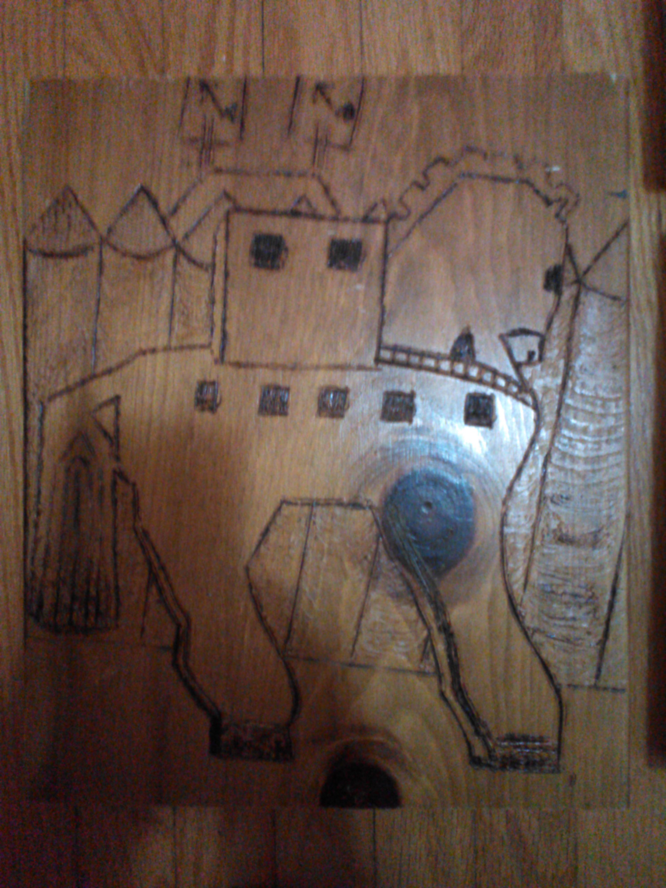
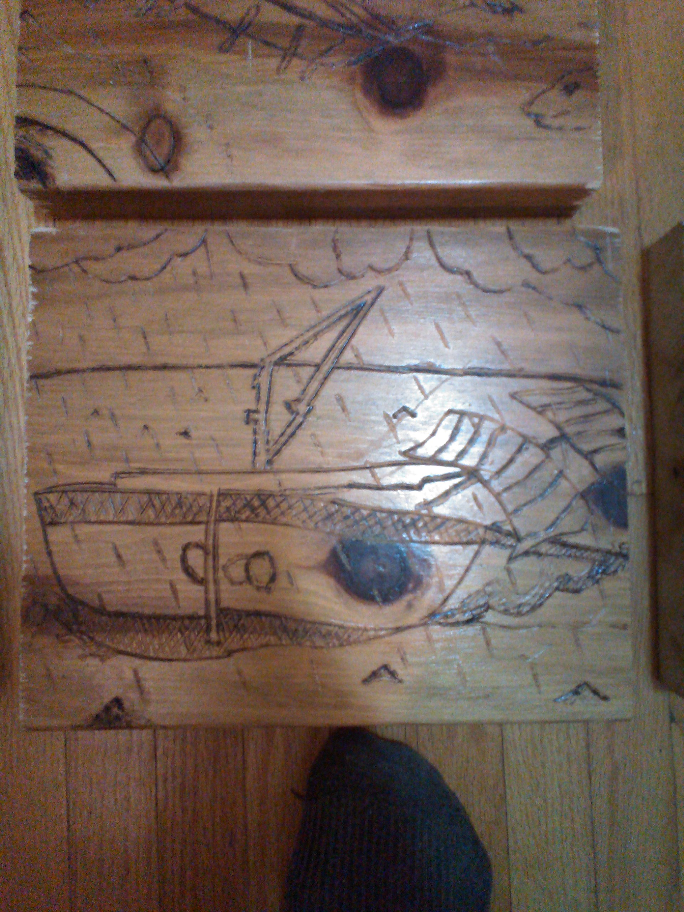
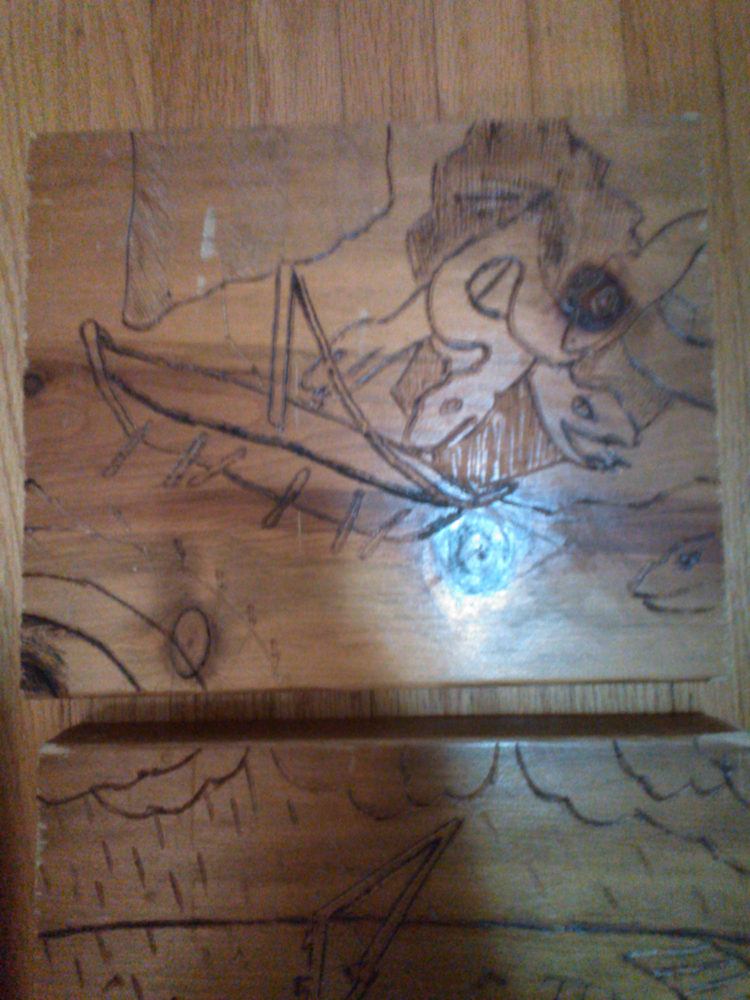
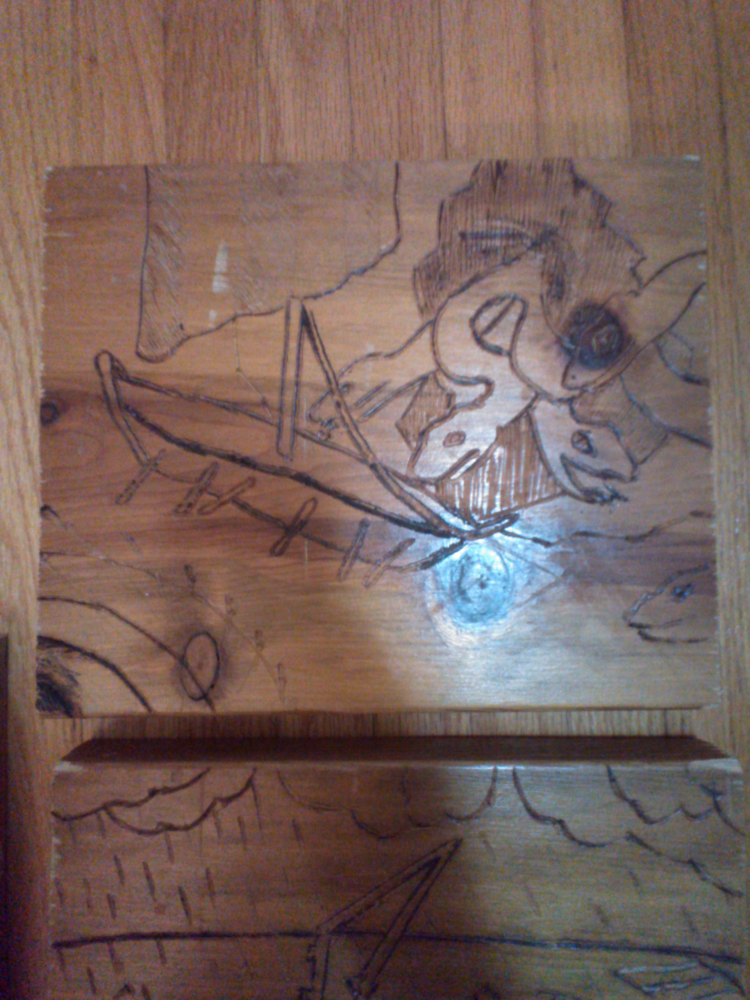

The Art of Pyrography
By Daniel Zang
Recently, I’ve learnt how to do pyrography and I made 4 pieces of artwork. Now, if you don’t know what I’m talking about, pyrography is like burning wood to make an image.
Here’s what I made:
 
I had lots of fun making these pieces and I would like to share with all you guys how to make your own artwork from wood and hopefully, you’ll be able to gain some respect from your friends and family!
Firstly, you’ll want to gather your supplies from your nearby hardware store. You’ll need some wood (which we’ll talk about later), paper, pencils, and a soldering iron (preferably with multiple tips and adjustable temperatures). Optionally, you can also bring a fine chisel, sandpaper, wood stain, and a brush.
Of course, the next thing you’ll want to do is to have an idea of what you want to make. Personally, I know that sometimes the ideas don’t come quickly and it can be a bit hard to get started on something so we have something called the internet! Search for pictures and photos to become inspired and grab a pencil and paper to start a rough sketch of your picture.
Once finished, you should start preparing your wood. I recommend pine for starters but the type of wood really depends on what kind of style you are aiming for; softer wood for darker and deeper burns (watch out for when the burn “seeps” out of the crack) and harder wood for lighter burns. I made mine with pine. Cut your wood to an appropriate size and always remember to sand off the edges to prevent splinters and just to give it a slightly more finished look.
Next, transfer your image onto your wood using a pencil. Make sure you can see your marks clearly and if you cannot, use a softer tip to increase the darkness of the marks on the wood. If you feel like you cannot replicate the image, you can use carbon paper to transfer the image. Alternatively, you can press down hard on your image with a fairly sharp object to make marks on your wood, but be warned, if you make a mistake using the sharp object, you will most likely not be able to get the mark off.
It’s time for the fun part! In an area with good ventilation, (the sap can be poisonous when burned) plug your soldering iron in and trace your lines with varying amounts of force and temperatures. After some hard work and dedication, you’ll be able to get your outline done! Congrats! Now, the next thing to do is to shade your image. There are many ways to do this; you can cross-hatch, give a smooth shade with a flat soldering bit, or make a lot of dots (I forgot the terminology). Remember: everything you do now is FINAL, there is not much you can do if you mess up. If you’re lucky, the part that needs to be erased is a bit of superficial shading and you can gently use the sandpaper to sand out the burnt parts. Now that you have your picture completed, you can use stain and a brush to polish your work. The stain can also be poisonous so you may want to take a break now and then to reduce prolonged exposure.
You’re done! Step back and examine your beautiful work!!! Even if it didn’t turn out to be what you wanted, I hope you had fun making it and you learned something in the process of creating the artwork.
More Pictures:
 
Why does Helium make your voice high-pitched
By Daniel Zang
Helium is found in party items such as balloons (and only ballons), and we know Helium, when inhaled, drastically increases the pitch of people's’ voices, resulting in a prank that is sure to come up in parties. Most people who actually use Helium to for this trick have no idea why it works! Well, after reading this short explanation, you’ll add another bit of knowledge to your brain, and perhaps, with some luck, you’ll be able to bring this up in a conversation and sound like the smartest person alive (only a little exaggerated)
First things first; we have to understand how noise escapes our mouths. In our throat, there are two flaps of skin (technically mucous membranes) that relax when we breathe, allowing the air to flow into our lungs. They contract when we attempt to speak. When this membrane is contracted, the airflow is restricted and begin to make the membrane vibrate from between 200 to 2200 times per second (very much like how any instrument works), which, in turn creates sound. By varying the “tightness” of the membrane, we can control the pitch of the sound that is necessary for communication.
Now you might be asking: “But, what does that have to do with anything?” Well, I’m about to tell you right now. The density of the air that passes through our vocal cords also changes the pitch of the sound. You can compare it to viscosity; it is much harder for toothpaste to flow through a tube than water. Contracting your mucous membrane increases air resistance which decreases pitch and the higher the density, the higher the resistance and therefore, the pitch will decrease. The “average air” density is 1.225 kg/m3 (composed of mostly nitrogen and oxygen) and gaseous helium is much lighter, coming in at around 0.164 kg/m3.
Now, we can easily see how helium increases the pitch of people’s voices. But, this stirs up a new question: if hydrogen is lighter than helium and hydrogen is much more common in the universe, why don’t we use hydrogen? If we pull a periodic table out of the internet (it’s the 21st century) we can see that helium falls under the noble gases, meaning that helium is a very stable element, also meaning that it is fairly safe to use it. Hydrogen on the other hand is not stable and must bind to another element to keep it chemically satisfied like all the other Alkali Metals. To keep the hydrogen lighter than our helium, we only have one possible combination: H2 or hydrogen gas. Hydrogen gas is HIGHLY flammable, meaning that it could literally spontaneously combust. Hopefully, I need not say more and you understand why we don’t allow children to handle pure hydrogen.
(Editor’s Note: Please do not waste helium attempting to do this, although it is the second most common element in the Universe, because of its density it escapes Earth’s Atmosphere and we don’t have a good supply of it, and we need that supply for Medical Instruments like MRI Machines. That was a long Editor’s note; Goodbye Gentlemen.)
Why colds are so contagious
Written by Daniel Zang, Edited by the Site Owner
We’ve all been there... coughing and sneezing uncontrollably, laying in our beds at night unable to sleep all because of some microscopic, unperceivable, and seemingly inevitable organism. 'Acute Coryza' or 'Rhino Pharyngitis' (commonly known as rhino virus) is the scientific term used to classify these tiny pathogens that wreak havoc on your immune system. But what makes them so common? Why is there no vaccine? Why is there no cure? By the end of my short explanation you’ll understand why the common cold is so common.
The common cold is caused by rhinoviruses (and coronaviruses), which are viruses that mutate extremely often, making it hard for our immune system to detect and eliminate the virus. Thus, allowing the slightly changed virus to infect the same single individual multiple times. This brings us to our first point on how these sneaky nuisances infect so many of us: rapid mutation; The viruses that cause the common cold all have this trait, allowing them to resist any attempts at using antibiotics or even being able to adapt antibodies against them.
Firstly, common colds are not affected by antibiotics. But what makes them invulnerable to the things that affect all living cells? It’s not called an antibiotic for nothing. (Anti meaning against and biotic meaning living) Due to its unstable nature and natural selection, common colds and other viruses are become immune to antibiotics. Well, how does it work? Picture this: we have two viruses, which start multiplying until our body realizes that we have potentially harmful intruders. Then, our body starts to fight the virus by sending different cells like macrophages (a type of white blood cells) and the victim begins to experience the nasty symptoms caused by your body trying to fight the pesky intruders, more commonly known as a cold. Feeling the effects of the pathogen, we take antibiotics to help fight against the virus. Alas, the virus mutates, and even though some are killed, they mutate so fast that there are some viruses that become immune to that antibiotic. The resistant strains survive and pass the immunity to the next generation, making that strain invincible to that antibiotic. When the virus mutates, our body no longer recognizes the pathogen, leaving us susceptible to the same virus again.
But the thing is: it’s not actually the same virus. There are millions of different strains that are categorized as the common cold (a catch-all phrase destined to mean a stuffy nose) which can be caused by a myriad of different organisms. Rhino Virus is just one of the ones we know, who is responsible for between 30% and 80% of the infections in a season, and included on the that list is the flu, commonly confused for the cold. The thing is, the common cold is just a catch-all that describes how your body fights off infection, which kind of explains why the cold is so common.
Even if the common cold is extremely, well, common, there are many ways to reduce your chances of contracting it. But, going outside when it is cold does not, I repeat, does NOT make you get a cold (although it does lower your immunity to it and takes longer to recover from it), contrary to popular belief. The only way to become infected with the viruses is to come into contact with the virus itself. During the winter season, many people tend to stay indoors, allowing the pathogen to spread more effectively, which may be a reason why people think that the common cold is caused by the cold temperatures. Myth busted!
Finally, the common cold affects the respiratory system, allowing them to be extremely quick when spreading to other humans. Particles from sneezes travel at approx. 100mph / 161 kmph, so bad luck for anyone caught in its blast radius. We all breathe, and when we all breathe the same air, it’s bound to get contaminated.
Finally, we have reached the conclusion of this conjecture on why colds are so contagious, but, if you think about it enough, the viruses that cause the common cold are just organisms that are trying to survive in our world. They keep alive by multiplying in their hosts (us) and we try to kill them for it (successfully too). However, the cold actually helps us by acting as a training ground for our immune systems, allowing most of us to combat other diseases with more ease. There are proposals to eliminate the common cold, but my stance is, why? For no other reason, colds play an important, if unknown role in our world, it’s going to be unnecessarily expensive, and all it takes is one person to ruin it. Perhaps, the common cold is just going to be one of the annoyances we’ll have to deal with.
Welcome to our Blog
By Frank Lai, The WebMASTER
A blog is like a book that is read aloud while it is being written, in that the result is the same. I've always wanted to start a blog, so here! Done... ... ... Oh well, I have a blog now. What should I write? Probably something, and I should get the comments going soon as soon as I install the php servers. If you could, email me.
The Skirmish
By Frank Lai, and his overly Dramatic ambitions ringing hollow.
He who gives up a little freedom for a little security deserves neither.
-Benjamin Franklin
The regiments clashed together like petty schoolchildren. Each man armed with weapons as to kill, if they wanted to, yet collectively, they chose to simply hurl sticks, stones, and insults at each other, like some petty urchins common in the streets of London. Their Commanding Officers -leading from behind- were looking at their scruffy recruits with obvious disappointment. ”Use your swords you bloody fools! What's the use with throwing rocks?” But to no avail, for that the men have collectively agreed upon the fact that they were to simply to torment the others, like they've done back home. In the field of war, the young peasants -in the absence of any training- had assumed that the battlefield was like back home; throw a bunch of rocks and try to scare them off.
By now, the peasants had tried to charge each other, but while one side assumed formation, the other side would attempt to flank them and then they dissolve back into a mob. The not commisioned officers in charge of all of this eventually grew tired of waiting and simply engaged in melee combat. The men, now having grown bored of themselves and quite too tired for their likings, sat down and became spectators for the match; some even placed bets on who would win. From the outside, it would seem to be an illegal fighting club, and to be fair, it may as well be.
The Colonel and his men, have spotted this mess, took a stern dislike and proceeded to intervene, giving a hard berating to both sides. The officers and his men, now having assumed to be schoolchildren, promptly got marched back to camp.